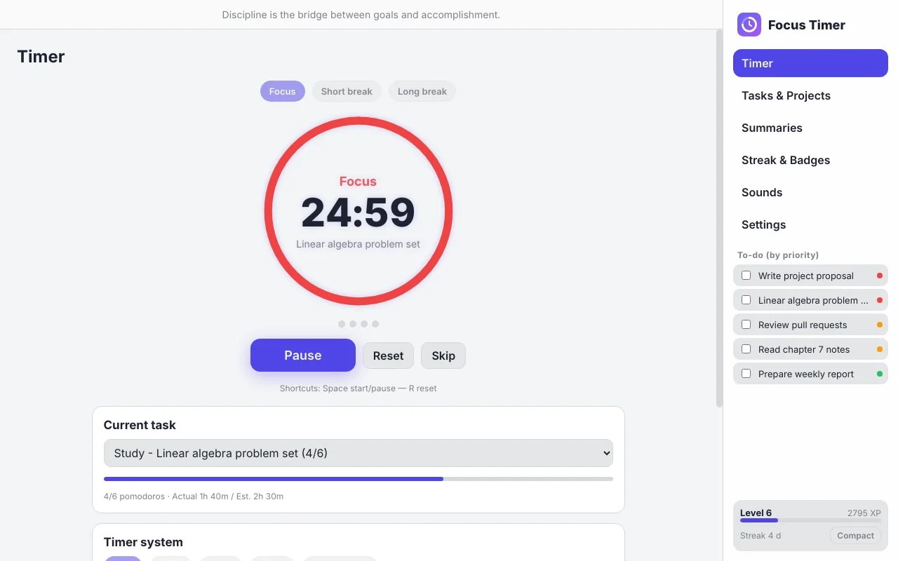
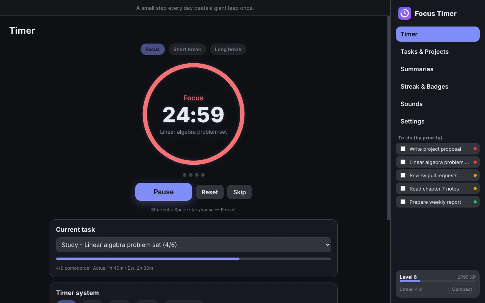
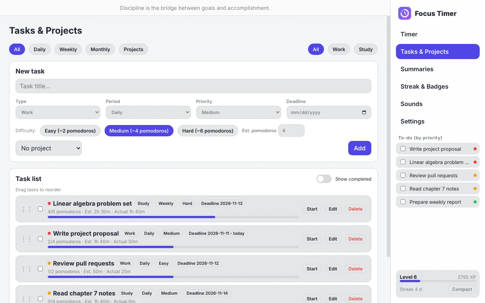
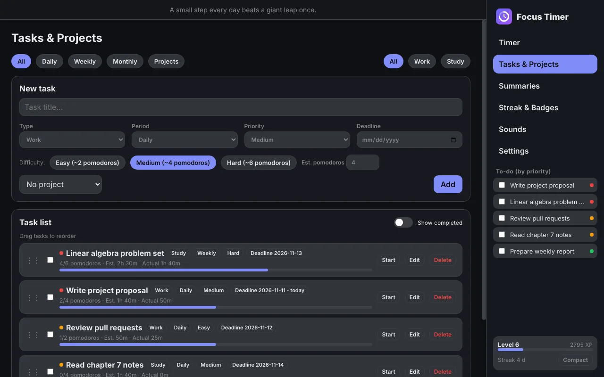
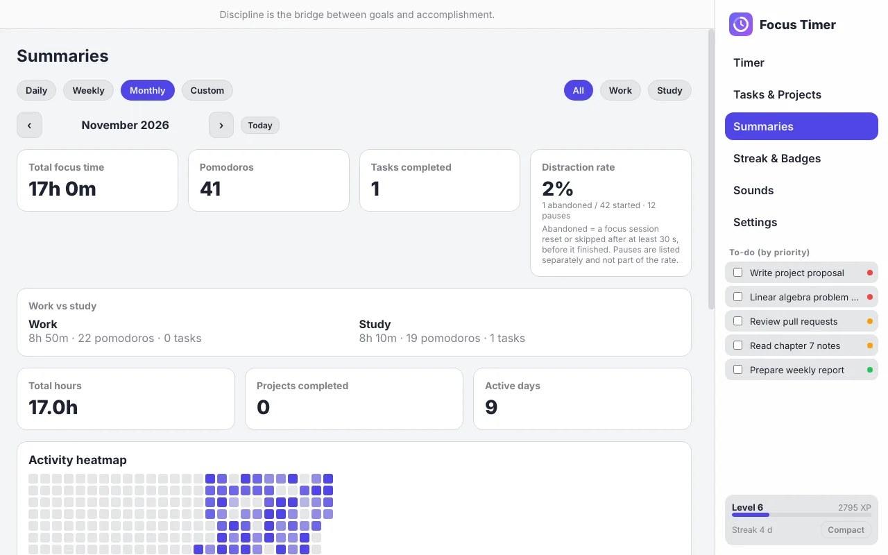
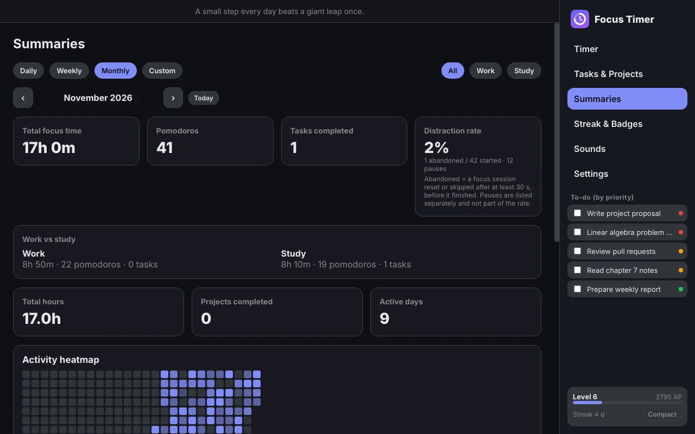
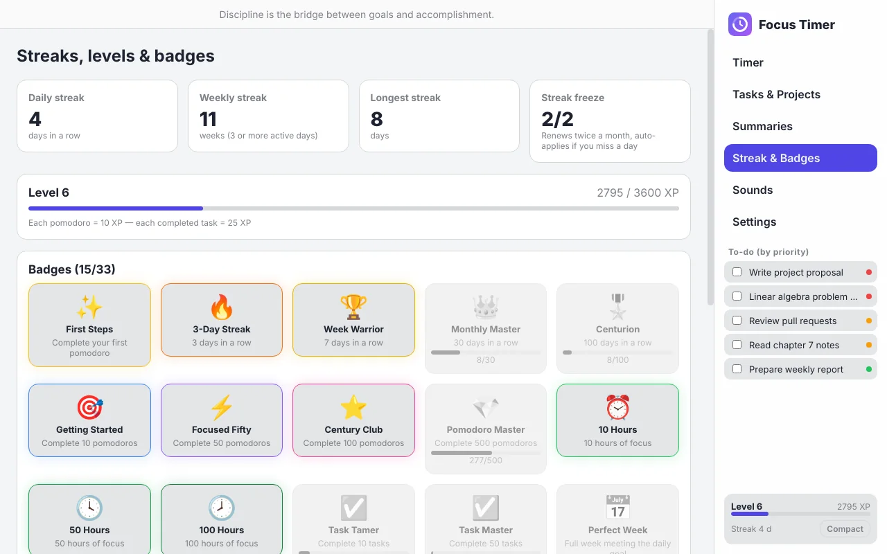
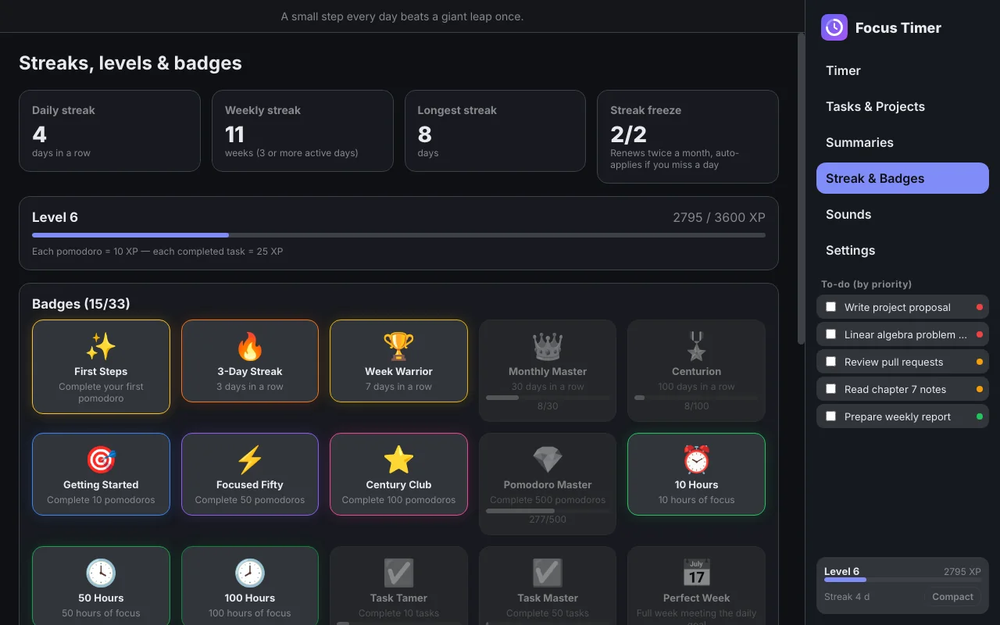
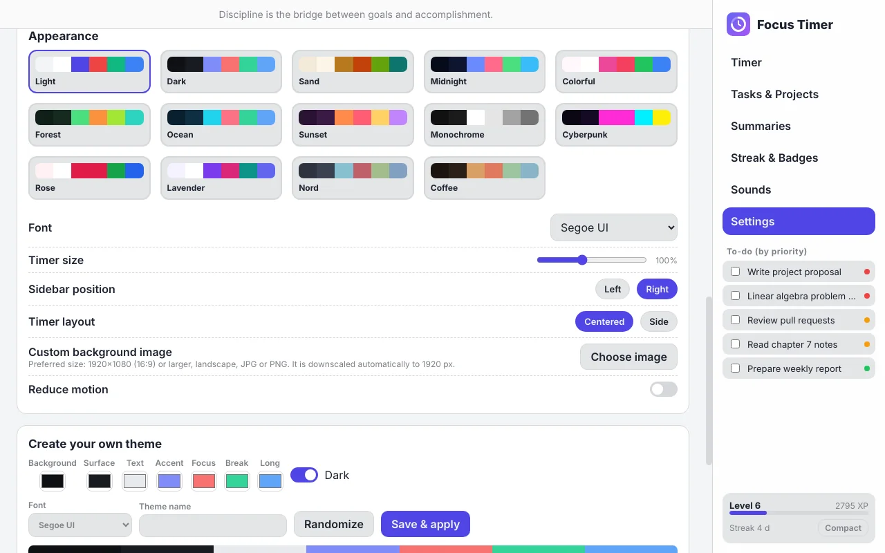
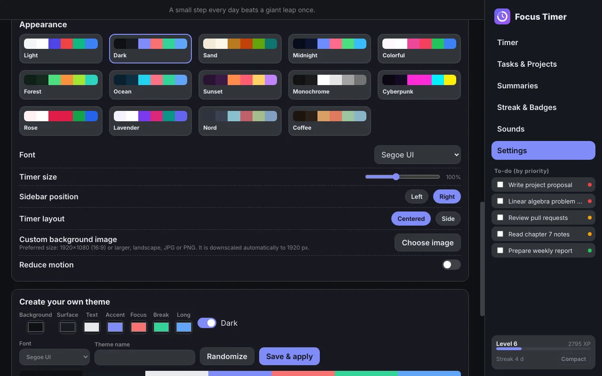

Focus deeper. Track everything.
A desktop Pomodoro timer for work and study, with tasks, streaks, analytics, ambient sounds and themes.
Latest release · Windows 10 and 11 · MIT License


Everything you need to stay focused
One app for your timer, your tasks and your progress.
Flexible timer systems
25/5, 45/15, 50/10, 90/20 and your own presets, saved automatically. Auto switch between focus and break, with start, pause, resume, reset and skip.
Tasks and projects
Daily, weekly and monthly tasks and projects, split into work and study. Set difficulty, priority and deadlines, and reorder with drag and drop.
Streaks, levels and badges
Daily and weekly streaks with streak freeze, XP and levels that grow with every pomodoro, and 33 badges to unlock.
Summaries and analytics
Daily, weekly, monthly and custom range summaries, an activity heatmap, and estimated vs actual time for every task.
Ambient sounds
Rain, ocean, wind, fireplace, birds, noise colors and a calm pad. Mix them, and switch sound effects on or off separately.
Themes and customization
13 built-in themes, your own theme builder, fonts, timer size, sidebar position and a custom background image.
Smart helpers
Your best focus time from your history, break suggestions, water reminders and motivational quotes or your own goal reminders.
Compact window
Shrink to a tiny timer that can stay on top of other programs while you work.
Arabic and English
A full interface in both languages, including right-to-left layout.
See it in action
Want to try it first? Use Try it online in the top bar.








Get Focus Timer for Windows
Install it in a minute. It is free, open source, and your data stays on your computer.
Download installerLatest release · Portable version · All releases
If Windows shows "Windows protected your PC"
The app is not code-signed yet, so Windows SmartScreen warns about new apps.
- Click More info
- Click Run anyway
The full source code is public, so you can check it or build it yourself.